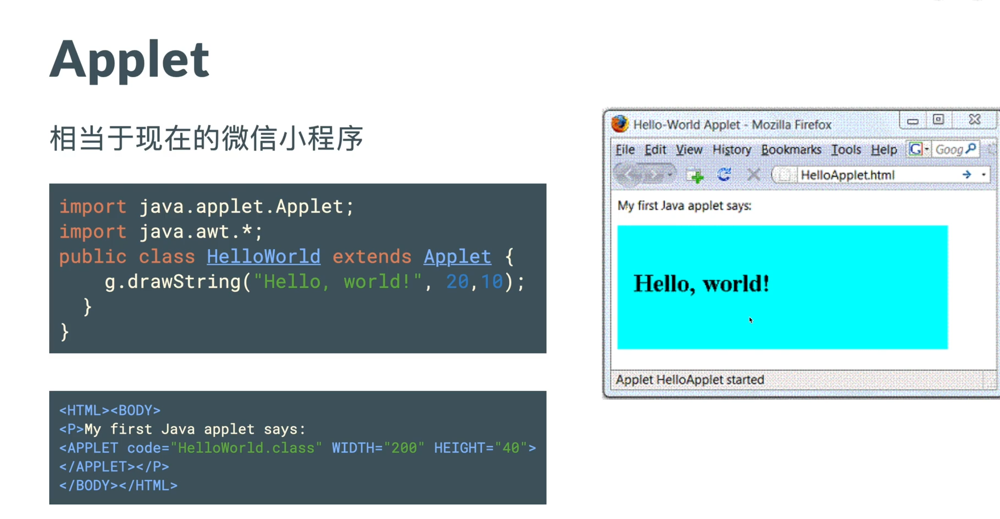
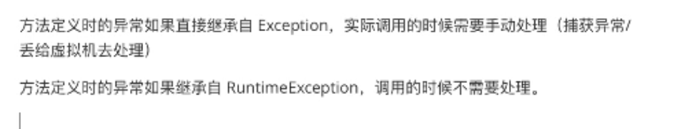

基础语法


- 对象：对象是类的一个实例，有状态和行为。例如，一条狗是一个对象，它的状态有：颜色、名字、品种；行为有：摇尾巴、叫、吃等。
- 类：类是一个模板，它描述一类对象的行为和状态。
- 方法：方法就是行为，一个类可以有很多方法。逻辑运算、数据修改以及所有动作都是在方法中完成的。
- 实例变量：每个对象都有独特的实例变量，对象的状态由这些实例变量的值决定。
访问控制符
default (即默认，什么也不写）: 在同一包内可见，不使用任何修饰符。使用对象：类、接口、变量、方法。 private : 在同一类内可见。使用对象：变量、方法。 注意：不能修饰类（外部类） public : 对所有类可见。使用对象：类、接口、变量、方法 protected : 对同一包内的类和所有子类可见。使用对象：变量、方法。 注意：不能修饰类（外部类）。
面向对象
封装
将类的某些信息隐藏在类内部，不允许外部程序直接访问，而是通过该类提供的方法来实现对隐藏信息的操作和访问。
只能通过规定的方法访问数据。隐藏类的实例细节，方便修改和实现。
继承
继承就是子类继承父类的特征和行为，使得子类对象（实例）具有父类的实例域和方法，或子类从父类继承方法，使得子类具有父类相同的行为。
 使用 implements 关键字可以变相的使java具有多继承的特性，使用范围为类继承接口的情况，可以同时继承多个接口（接口跟接口之间采用逗号分隔）
public class C implements A,B {}
使用 implements 关键字可以变相的使java具有多继承的特性，使用范围为类继承接口的情况，可以同时继承多个接口（接口跟接口之间采用逗号分隔）
public class C implements A,B {}
子类是不继承父类的构造器（构造方法或者构造函数）的，它只是调用（隐式或显式）。如果父类的构造器带有参数，则必须在子类的构造器中显式地通过 super 关键字调用父类的构造器并配以适当的参数列表。 如果父类构造器没有参数，则在子类的构造器中不需要使用 super 关键字调用父类构造器，系统会自动调用父类的无参构造器。
多态
多态是同一个行为具有多个不同表现形式或形态的能力；消除类型之间的耦合关系。
多态就是同一个接口，使用不同的实例而执行不同操作，如图所示：

Java 重写(Override)与重载(Overload)
重写是子类对父类的允许访问的方法的实现过程进行重新编写, 返回值和形参都不能改变。即外壳不变，核心重写！ 重写的好处在于子类可以根据需要，定义特定于自己的行为。 也就是说子类能够根据需要实现父类的方法。
重载(overloading) 是在一个类里面，方法名字相同，而参数不同。返回类型可以相同也可以不同。 每个重载的方法（或者构造函数）都必须有一个独一无二的参数类型列表。 最常用的地方就是构造器的重载。
方法的重写(Overriding)和重载(Overloading)是java多态性的不同表现，重写是父类与子类之间多态性的一种表现，重载可以理解成多态的具体表现形式。

接口
类描述对象的属性和方法。接口则包含类要实现的方法。 除非实现接口的类是抽象类，否则该类要定义接口中的所有方法。 接口无法被实例化，但是可以被实现。一个实现接口的类，必须实现接口内所描述的所有方法，否则就必须声明为抽象类。
标记接口
public interface EventListener{} 建立一个公共的父接口： 正如EventListener接口，这是由几十个其他接口扩展的Java API，你可以使用一个标记接口来建立一组接口的父接口。例如：当一个接口继承了EventListener接口，Java虚拟机(JVM)就知道该接口将要被用于一个事件的代理方案。
向一个类添加数据类型： 这种情况是标记接口最初的目的，实现标记接口的类不需要定义任何接口方法(因为标记接口根本就没有方法)，但是该类通过多态性变成一个接口类型。
容器
 ArrayList 类是一个可以动态修改的数组，与普通数组的区别就是它是没有固定大小的限制，我们可以添加或删除元素。
ArrayList 类是一个可以动态修改的数组，与普通数组的区别就是它是没有固定大小的限制，我们可以添加或删除元素。
- 频繁访问列表中的某一个元素。
- 只需要在列表末尾进行添加和删除元素操作。
LinkedList 是一种常见的基础数据结构，是一种线性表，但是并不会按线性的顺序存储数据，而是在每一个节点里存到下一个节点的地址。
- 你需要通过循环迭代来访问列表中的某些元素。
- 需要频繁的在列表开头、中间、末尾等位置进行添加和删除元素操作。
HashSet 基于 HashMap 来实现的，是一个不允许有重复元素的集合。 HashSet 允许有 null 值。 HashSet 是无序的，即不会记录插入的顺序。 HashSet 不是线程安全的， 如果多个线程尝试同时修改 HashSet，则最终结果是不确定的。 您必须在多线程访问时显式同步对 HashSet 的并发访问。
HashMap 是一个散列表，它存储的内容是键值对(key-value)映射。 HashMap 实现了 Map 接口，根据键的 HashCode 值存储数据，具有很快的访问速度，最多允许一条记录的键为 null，不支持线程同步。 HashMap 是无序的，即不会记录插入的顺序。
谈谈ConcurrentHashMap1.7和1.8的不同实现 Hashmap的结构，1.7和1.8有哪些区别，史上最深入的分析
异常

 使用 try 和 catch 关键字可以捕获异常。try/catch 代码块放在异常可能发生的地方。
一个 try 代码块后面跟随多个 catch 代码块的情况就叫多重捕获。
使用 try 和 catch 关键字可以捕获异常。try/catch 代码块放在异常可能发生的地方。
一个 try 代码块后面跟随多个 catch 代码块的情况就叫多重捕获。
如果一个方法没有捕获到一个检查性异常，那么该方法必须使用 throws 关键字来声明。throws 关键字放在方法签名的尾部。
声明自定义异常
所有异常都必须是 Throwable 的子类。 如果希望写一个检查性异常类，则需要继承 Exception 类。 如果你想写一个运行时异常类，那么需要继承 RuntimeException 类。
泛型
泛型提供了编译时类型安全检测机制，该机制允许程序员在编译时检测到非法的类型。泛型的本质是参数化类型，也就是说所操作的数据类型被指定为一个参数。 假定我们有这样一个需求：写一个排序方法，能够对整型数组、字符串数组甚至其他任何类型的数组进行排序，该如何实现？ 答案是可以使用 Java 泛型。 使用 Java 泛型的概念，我们可以写一个泛型方法来对一个对象数组排序。然后，调用该泛型方法来对整型数组、浮点数数组、字符串数组等进行排序。
反射Reflection
是一种间接操作目标对象的机制，核心是JVM在运行的时候才动态加载类，并且对于任意一个类，都能够知道这个类的所有属性和方法，调用方法/访问属性，不需要提前在编译期知道运行的对象是谁，他允许运行中的Java程序获取类的信息，并且可以操作类或对象内部属性.
Java语言反射提供一种动态链接程序组件的多功能方法。它允许程序创建和控制任何类的对象(根据安全性限制)，无需提前硬编码目标类。这些特性使得反射特别适用于创建以非常普通的方式与对象协作的库。例如，反射经常在持续存储对象为数据库、XML或其它外部格式的框架中使用。Java reflection 非常有用，它使类和数据结构能按名称动态检索相关信息，并允许在运行着的程序中操作这些信息。 一个类在内存中只有一个class对象
一个类被加载后，类的整个结构都会被封装在class对象中
只要元素类型和维度相等就是同一个class
以下三种获取Class对象的方式有什么不同？ 1、new Object().getClass 2、Object.class 3、 Class.forName(“java.util.String”)
（1）类名.class：JVM将使用类装载器，将类装入内存(前提是:类还没有装入内存)，不做类的初始化工作，返回Class的对象。 –已知具体的类
（2）Class.forName(“类名字符串”)：装入类，并做类的静态初始化，返回Class的对象。 –已知一个类的全类名
（3）实例对象.getClass()：对类进行静态初始化、非静态初始化；返回引用运行时真正所指的对象(子对象的引用会赋给父对象的引用变量中)所属的类的Class的对象。 –已知某个类的实例
注解Annotation
I/O
图形化（Swing）
Native
JNI（Java Native Interface）Java本地接口
native是与C++联合开发的时候用的！java自己开发不用的！
使用native关键字说明这个方法是原生函数，也就是这个方法是用C/C++语言实现的，并且被编译成了DLL，由java去调用。 这些函数的实现体在DLL中，JDK的源代码中并不包含，你应该是看不到的。对于不同的平台它们也是不同的。这也是java的底层机制，实际上java就是在不同的平台上调用不同的native方法实现对操作系统的访问的。
- native 是用做java 和其他语言（如c++）进行协作时用的 也就是native 后的函数的实现不是用java写的
- 既然都不是java，那就别管它的源代码了，呵呵
native的意思就是通知操作系统，这个函数你必须给我实现，因为我要使用。所以native关键字的函数都是操作系统实现的，java只能调用。
java是跨平台的语言，既然是跨了平台，所付出的代价就是牺牲一些对底层的控制，而java要实现对底层的控制，就需要一些其他语言的帮助，这个就是native的作用了